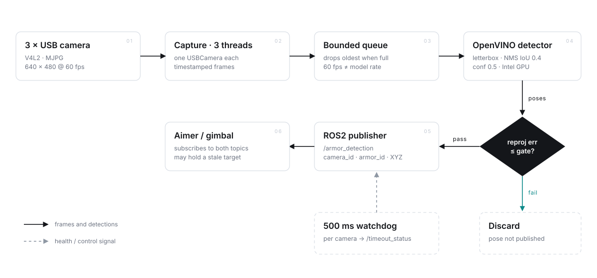
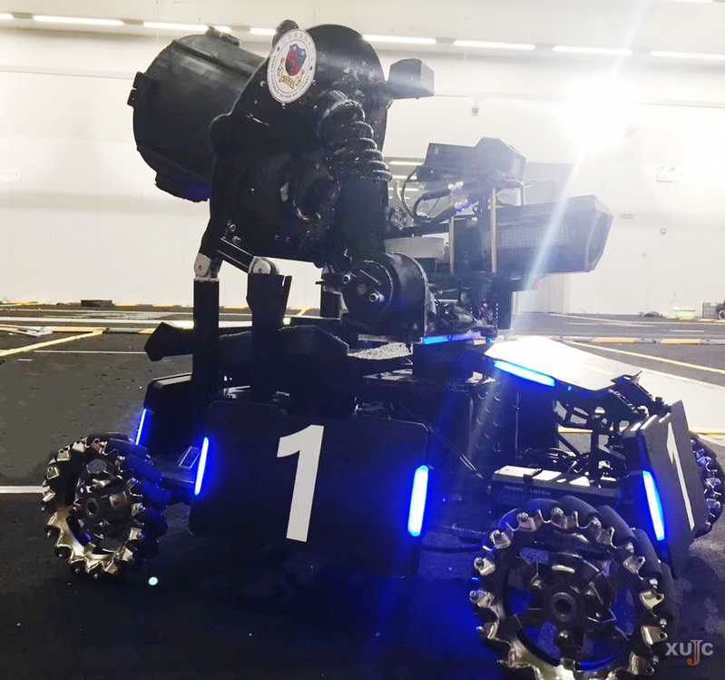

UAV Auto-aiming Algorithm
Omni Perception — multi-camera armor detection on ROS2 + OpenVINO
The vision front-end of an auto-aiming stack: three USB cameras feed a threaded OpenVINO detector, every armor plate is lifted to a 3D position with PnP, and the result leaves the process as a ROS2 message before the next frame arrives.
System Overview
The job of this module is narrow: given three live views of the field, return the 3D position of every visible armor plate, tagged with the camera that saw it and how fresh the measurement is. Everything downstream — aiming, gimbal control — reads only those messages, so the perception process never has to know what the robot does with them.
Cameras are captured on their own threads and hand frames to the detector through a bounded queue, which
is what keeps three 60 fps streams from serialising behind one inference pass. Detections are filtered by
NMS, mapped back to source pixels, then lifted to a metric pose with solvePnP;
poses whose reprojection error is too large are discarded rather than published.
A 500 ms watchdog runs per camera and publishes a separate timeout flag, so a consumer can distinguish no armor in view from this camera stopped delivering — a distinction that matters when the aimer has to decide whether to keep tracking a stale target.
Technical Stack
Detection Pipeline
Capture on three threads
Each camera owns a USBCamera instance: V4L2 backend, MJPG codec, fixed exposure, frames pushed into a bounded timestamped queue.
Stable device identity
/dev/video* enumeration order is not stable across reboots, so each unit is identified by its sharpness register — 81 left, 82 right, 80 rear.
OpenVINO inference
Letterbox resize keeps the aspect ratio; the compiled model runs on the Intel GPU with CPU fallback; NMS at IoU 0.4 prunes overlaps; boxes are restored to original coordinates.
Pose from four corners
Known plate geometry plus the four projected corners give position and orientation; the reprojection error is checked before a detection is allowed to become a pose.
Publish and timeout
camera_id, armor_id and the 3D point go out on /armor_detection; the watchdog drives /timeout_status.
System Architecture
Three capture threads, one inference stage, two published topics. The queue between capture and inference is the only place where the 60 fps camera rate and the model rate have to agree.

/armor_detection only when the reprojection
error clears the gate — a bad pose is dropped rather than published, so the aimer never sees a
confidently wrong target. On narrow screens the diagram scrolls horizontally.
On the Robot
The perception node is only half of a RoboMaster aiming loop. The other half — attitude, motion prediction and ballistics — runs on an STM32, and the split is deliberate: the miniPC is allowed to be late, the control loop is not.

Why the loop is split
- miniPC — vision. Preprocess, light-bar detection, bar pairing, pose solve. Float-heavy work that tolerates jitter and can restart without consequence.
- STM32 — control. IMU attitude, motion-state estimation, prediction with ballistic compensation, gimbal output to the GM6020. Fixed rate, no dynamic allocation, no missed deadlines.
- The change I made. The vision stack originally ran on a Jetson Orin; I ported it to a miniPC as part of an architecture change aimed at cutting response latency, leaving the Orin free and shortening the run to the cameras.
What crosses the boundary
One message wide on purpose: widen the interface and every change to the detector starts leaking into the control loop.

Specification
Implementation Notes
Four decisions that shaped the code more than the choice of model did.
A queue, not a lock
Capture and inference run at different rates. A bounded, timestamped queue per camera means a slow inference pass never blocks a capture thread, and a camera that outruns the detector cannot grow memory without limit.
Identity by register
Reboots reshuffle /dev/video*, so the node reads each camera's sharpness value back from the driver and binds roles to that number. No udev rules, no manual re-plugging before a match.
Reject, don't guess
A box that survives NMS can still fail geometry. Poses above the reprojection-error bound are dropped, so the aimer receives no target instead of a plausible-looking wrong one.
Timeout is its own signal
"No armor in view" and "this camera stopped delivering" are different failures. Publishing the second on its own topic keeps the consumer from treating a dead USB link as an empty field.
Build & Run
Two packages in a ROS2 workspace: the message definitions and the perception node.
cd ~/ros2_ws/src
git clone https://github.com/bili186/usbcamera_openvino_ros.git
cd ~/ros2_ws
source /opt/ros/humble/setup.bash
colcon build --packages-select armor_msgs omni_perception
source install/setup.bash
ros2 run omni_perception omni_perception
# inspect what the node publishes
ros2 topic echo /armor_detection
ros2 topic echo /timeout_statuscamera:
image_width: 640
image_height: 480
usb_frame_rate: 60
usb_exposure: -7
devices:
left: { sharpness: 81 }
right: { sharpness: 82 }
behind: { sharpness: 80 }
detection:
confidence_threshold: 0.5
iou_threshold: 0.4Still on the roadmap
Related Projects

Thyroid Carcinoma Classification
View Project